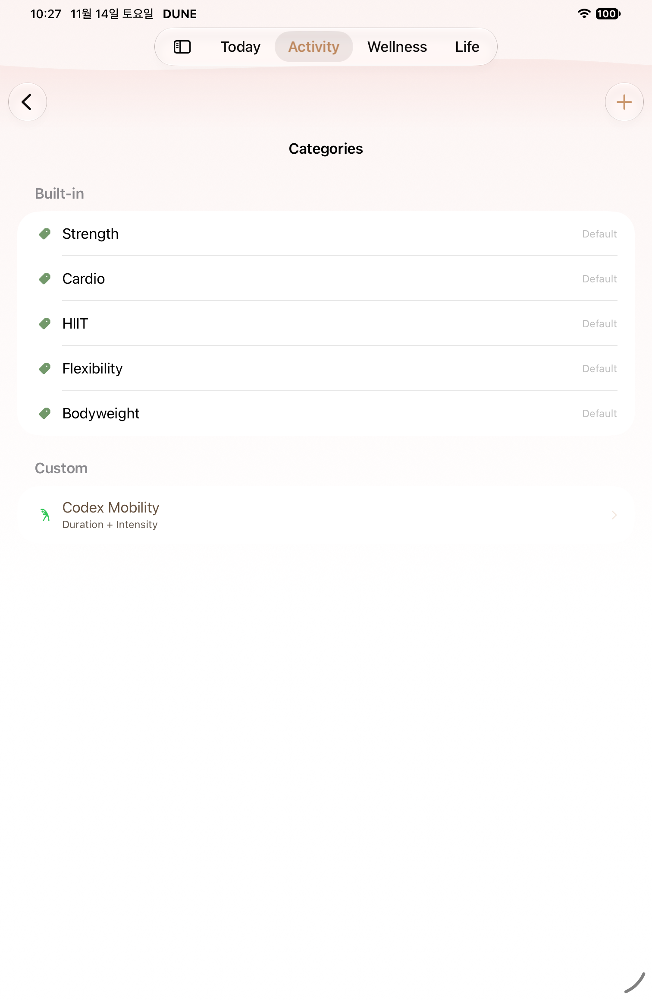
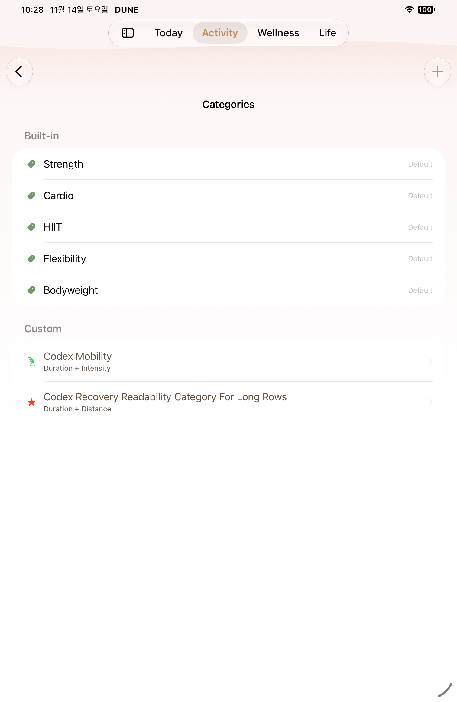
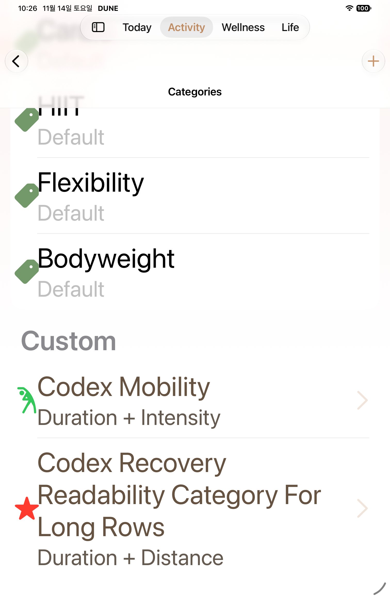

<!doctype html><html lang="en"><meta charset="utf-8"><meta name="viewport" content="width=device-width,initial-scale=1"><title>W29 native captures</title><style>body{margin:0;padding:24px;background:#101819;color:#f5f2eb;font-family:-apple-system,sans-serif}main{max-width:1100px;margin:auto}.grid{display:grid;grid-template-columns:repeat(auto-fit,minmax(300px,1fr));gap:18px}figure{margin:0;padding:12px;background:#1b292b;border-radius:12px}img{width:100%;height:500px;object-fit:contain}a{color:#e8bf94}</style><main><h1>W29 · 2026-11-14 iPad</h1><p><a href="README.md">Scope</a> · <a href="manifest.json">Native hashes</a></p><div class="grid"><figure><a href="assets/normal-01.png"></a><figcaption>W29 normal built-in name icon and Default · <a href="assets/normal-01.txt">AX</a></figcaption></figure><figure><a href="assets/normal-02.png"></a><figcaption>W29 normal long custom category row and input type · <a href="assets/normal-02.txt">AX</a></figcaption></figure><figure><a href="assets/MAX-01.png"></a><figcaption>W29 MAX built-in name icon and Default · <a href="assets/MAX-01.txt">AX</a></figcaption></figure><figure><a href="assets/MAX-02.png"></a><figcaption>W29 MAX full custom category row and input type · <a href="assets/MAX-02.txt">AX</a></figcaption></figure></div></main></html>
